Intro
I am a sophomore majoring in software engineering at the School of Computer and Information Science at Southwest University.
In the first three semesters of college, I mainly devoted myself to the cultivation of professional skills and the development of discipline competitions, such as mathematical modeling contest and electronic chip design contest.
Honors and Awards
- 2023-2024:Third-class Scholarship of Southwest University (20/117)
- 2024.09:Provincial second prize in the National College Students Mathematical Contest in Modeling
- 2024.05:Second prize in mathematical modeling contest of Southwest University
- 2025.01:2024 Certificate Authority Cup International Mathematical Contest in Modeling —- Finalist Award
Intership
- 2024.06-2024.09:Chongqing Zhongke Automotive Software Innovation Center
Robotics
I have some experience in designing and implementing robotic systems. Here are some of the robotic systems I have helped develop:
-
ROS-based Intelligent autonomous car with SLAM mapping function:
I designed and implemented an intelligent autonomous vehicle system based on ROS that can map specific areas and perform data collection.

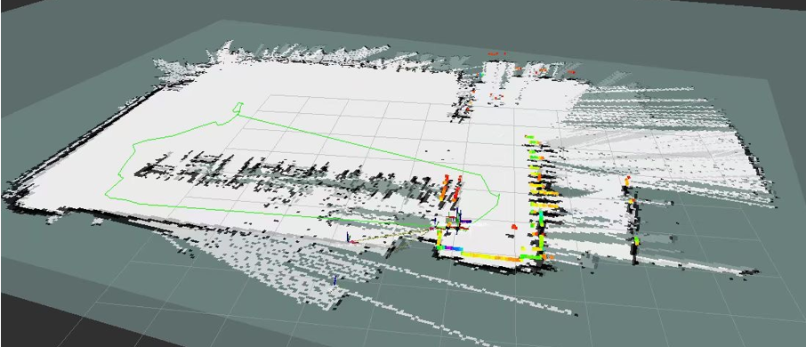
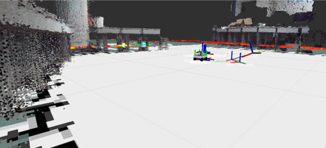
- Automatic tracking device for stm32 and openmv: Based on stm32 and openmv, part of the 2023 Electronic Design Competition E was reproduced
-
Isaac Sim simulation platform:
Based on Isaac Sim, we realized the following functions, such as environmental design modeled after the Safety Gymnasium, SLAM navigation, autonomous modeling car operation, semantic segmentation data collection, etc.
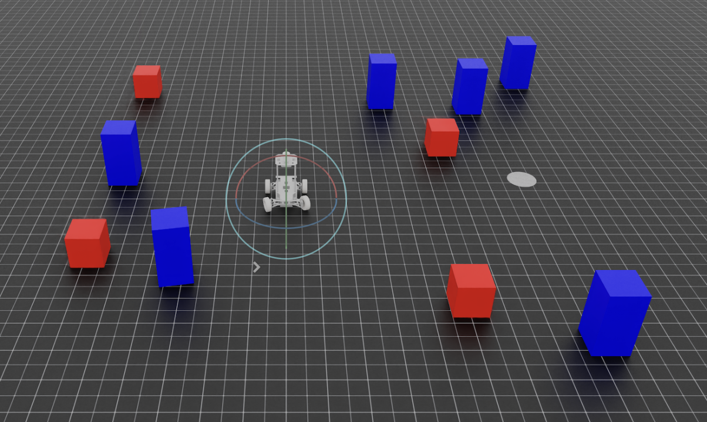
Top floor (vehicle)
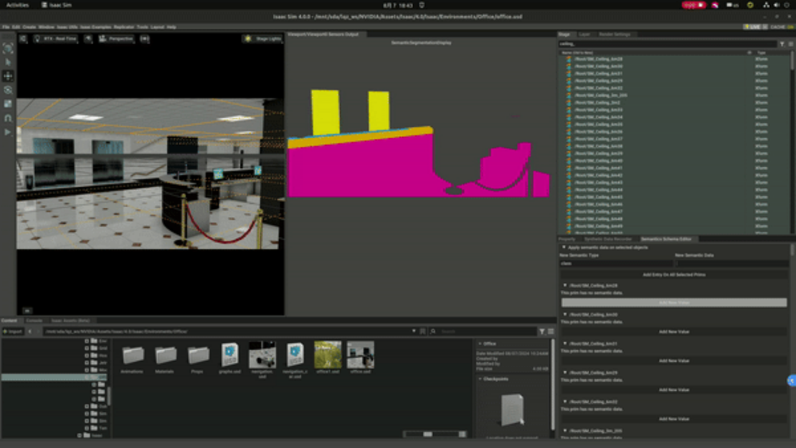
Substratum (vehicle)
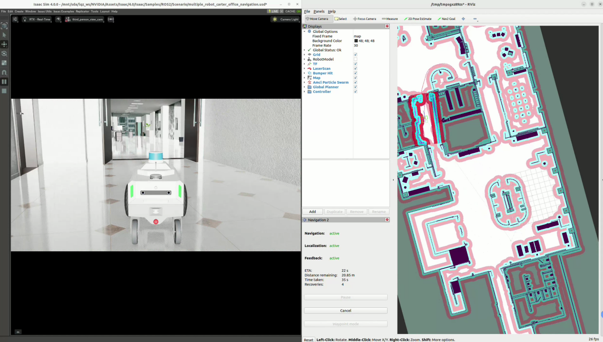
Top floor (voice)
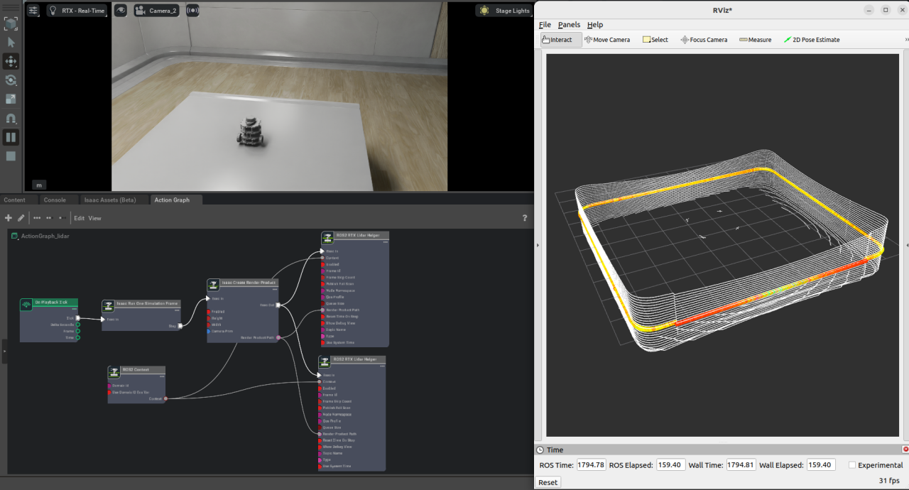
Substratum (voice)
-
Robot verification:
Ensuring the accuracy of movements under the digital twin environment, debugging planar motions such as straight-line and rotational movements, and performing maintenance and upgrades on the robot.
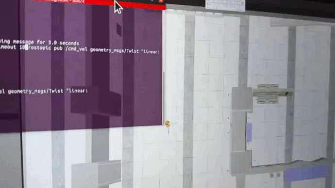
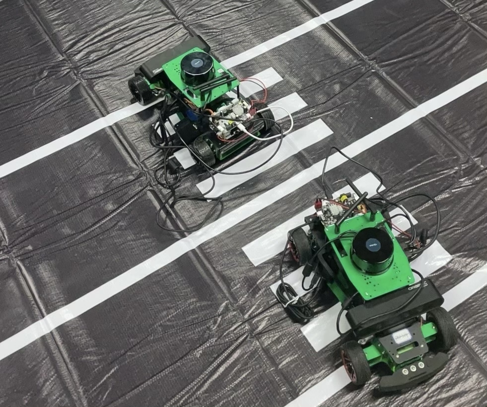
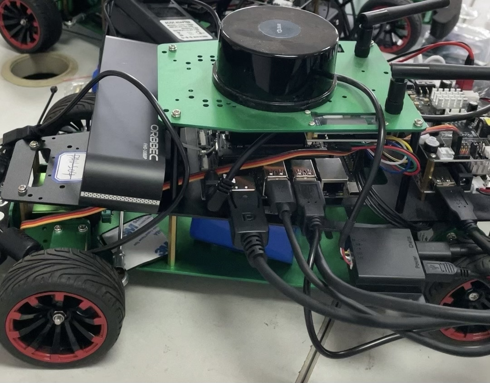
-
Manufacture and repair robots:
I have extensive practical experience in manufacturing and repairing various robots. In the process, we have assembled different types of robots, controllers, and sensors based on actual needs. We have also addressed some dangerous situations encountered, including robots losing control, battery fires, and motor burnouts.
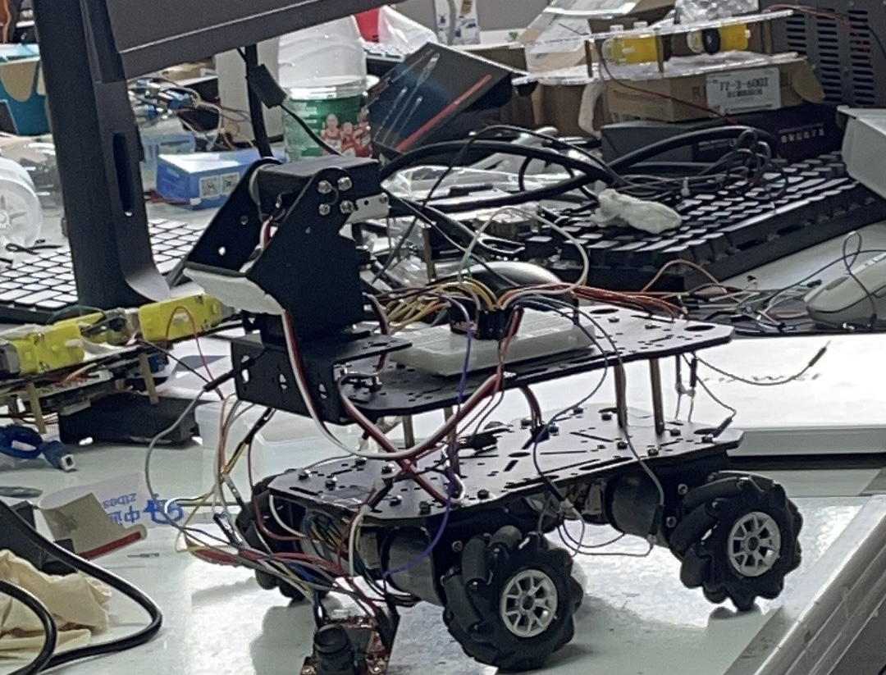
Motor maintenance
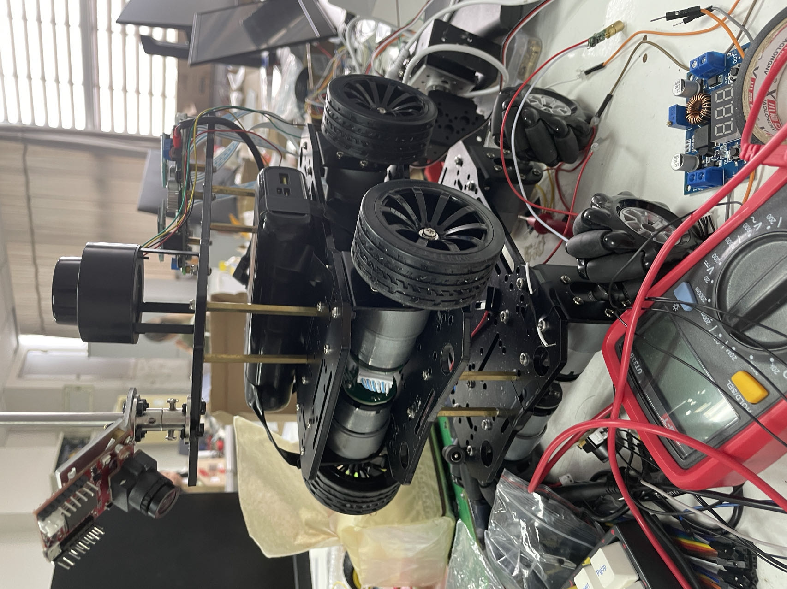
Radar and sensor testing
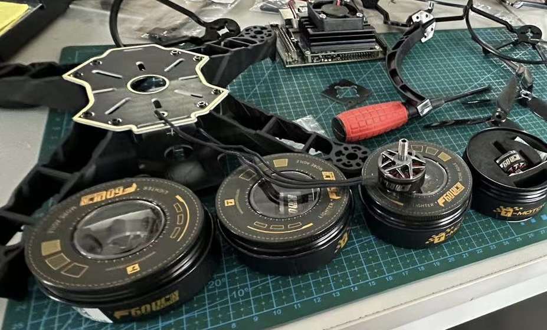
Drone assembly
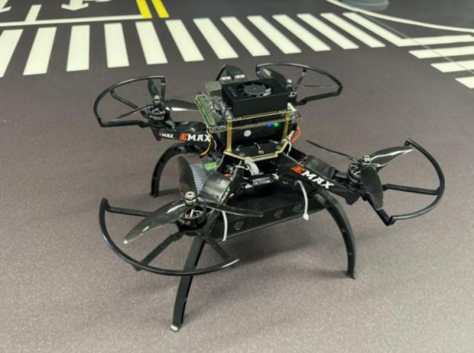
Unmanned Aerial Vehicle

Interests
In addition to the above research, I have some hobbies:
- Aviation modeling: Passionate about designing, building and flying model aircraft. Mainly line manipulation model, high school won national awards
- Traveling: Enjoy exploring customs, cultures, and landscapes of various places.
- Guitar: Passionate about playing the guitar, mainly solo, favorite master is Masaaki Kishibe
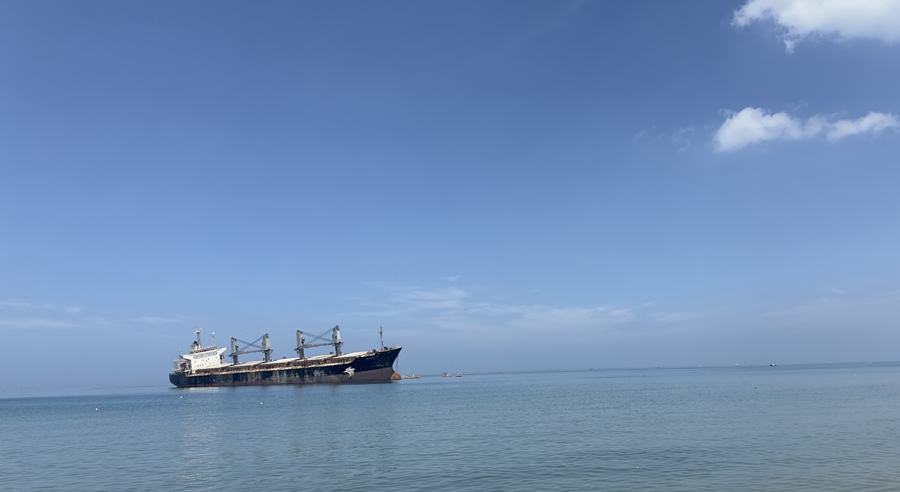
Weihai City

Airplan model &my friends
Update: 2025.2.13